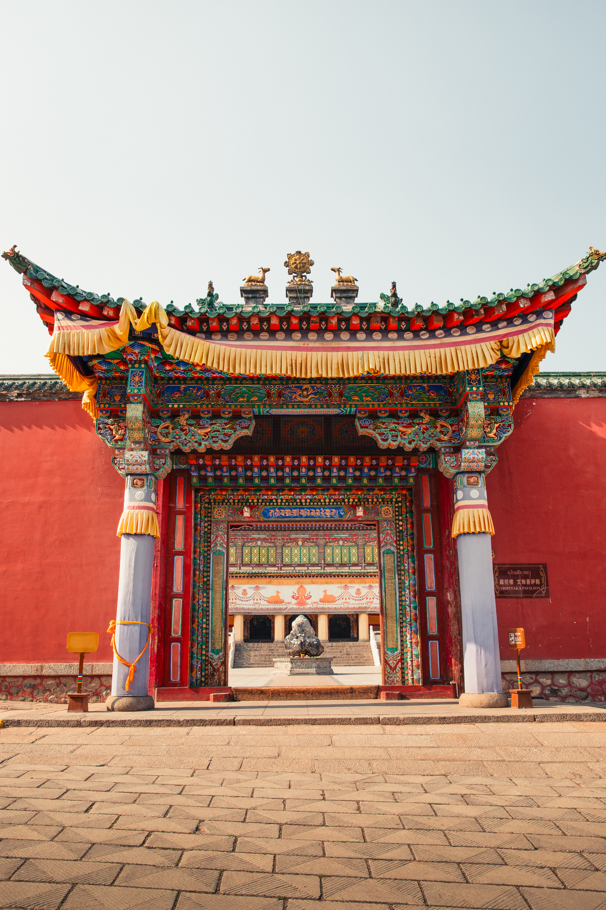
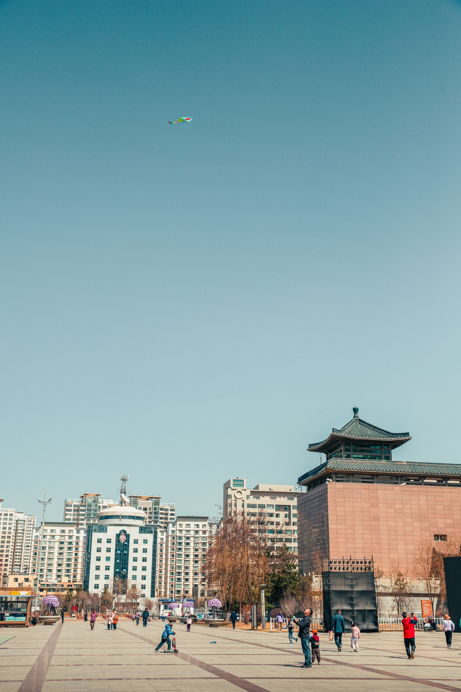
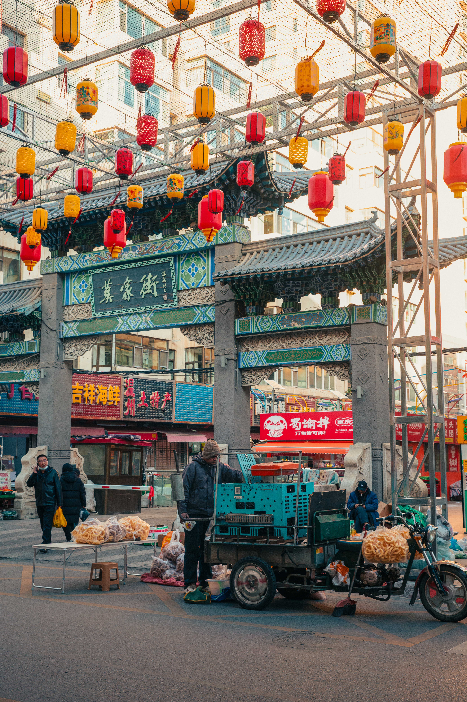
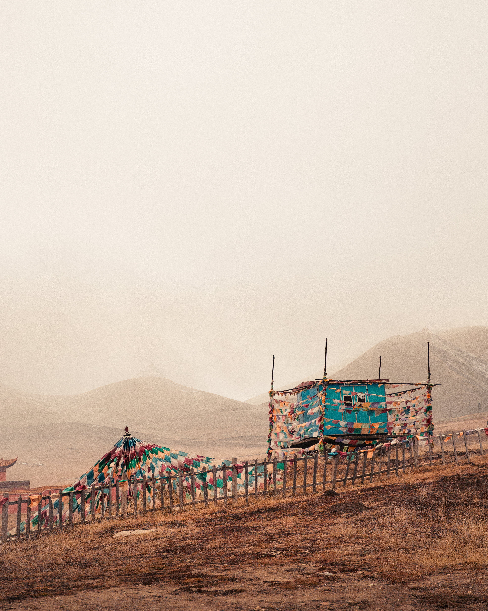

The Hui Crescent: Where Faith Pulses at the City's Heart
Walking through the Muslim Quarter of Xining, you enter a world defined by crescents, minarets, and the call to prayer echoing across brick courtyards. The Hui Muslims have inhabited this region for centuries, creating a distinct culture that blends Islamic faith with Chinese pragmatism. Their mosques are not separated from city life—they pulse at its center, refusing to be peripheral.
The Dongguan Mosque, one of China's oldest and most significant, sits majestically in the heart of the city. Its architecture tells a story of cultural negotiation: traditional Chinese tile work and upturned eaves frame Islamic geometry and Arabic calligraphy. The main sanctuary displays ornamental density, while the courtyards offer spaces of reflection and community. Just blocks away, the newer Nanguan Mosque serves the growing community with contemporary grace. Together, these two sites represent continuity and change within a faith community that has weathered dynasties.
Food vendors fill the surrounding streets with the aroma of lamb skewers, hand-pulled noodles, and fried dough. The Hui community has made Xining a culinary crossroads where Islamic dietary traditions meet regional ingredients, creating something entirely unique to this plateau city.
Kumbum Monastery: One of Tibet's Holiest Sites
An hour's drive from Xining, the Kumbum Monastery stands as one of Tibetan Buddhism's most sacred sites. Built in 1583 on the birthplace of Je Tsongkhapa, the monastery is a labyrinth of golden roofs, prayer wheels, and monks moving between ancient chambers. The scale is overwhelming—thousands of stupas, butter lamps reflecting in the darkness, pilgrims circumambulating with prayer beads in hand. The monastery sprawls across a mountainside, a theological and architectural statement about the depth of spiritual practice.
Walking the monastery's courtyards, you encounter monks in burgundy robes, prayer wheels spinning, the sound of chanting drifting through stone passages. The architecture speaks of centuries of devotion: painted beams in intricate patterns, gold leaf catching light, every surface carrying symbolic meaning. The main assembly hall holds hundreds of pilgrims during religious ceremonies. This is not a museum or historical site—it is a living center of spiritual practice, with monks conducting daily rituals and teaching Buddhist philosophy to new generations.
The experience of Kumbum reveals something fundamental about Tibetan Buddhism: it survives not through preservation but through practice. The monastery functions because people still come to pray, study, and dedicate their lives to spiritual transformation. This continuity across centuries—from its founding through multiple dynastic changes to the present day—demonstrates the depth of faith that sustains Tibetan Buddhism on the Qinghai plateau.



Nanshan Temple: Meditation Overlooking the City
Within the city itself, Nanshan Temple offers a more intimate encounter with Tibetan spiritual practice. Perched on a hillside overlooking Xining, the temple complex draws both devout practitioners and curious travelers. The setting itself feels sacred: red and gold prayer flags snap in the mountain wind, the sound of bells and prayers drifts through temple courtyards, and from the highest terraces, you can trace the entire city below—a literal and symbolic vantage point for understanding how Tibetan Buddhism coexists with other faiths and traditions in this remarkable place.
Unlike Kumbum's grand scale, Nanshan Temple operates at human scale. The meditation halls feel intimate. Visitors move through spaces designed for contemplation rather than spectacle. The views from the temple's platforms encompass the entire Xining valley—mountains on three sides, the city spreading below, the vastness of the Qinghai plateau stretching toward distant horizons. It's a place where you can sit quietly and watch the light change across the landscape, understanding why Buddhists chose this hilltop for a temple.
What strikes visitors most is the openness of Nanshan Temple. Pilgrims, monks, tourists and photographers move through the site with a kind of mutual respect that seems increasingly rare. The temple welcomes visitors while maintaining its spiritual integrity—a balance that speaks to the Buddhist principle of compassion for all sentient beings. Here, devotion and curiosity are not opposed but intertwined.
Street Life: The Daily Pulse of Xining
The most honest picture of a city emerges not from its monuments but from its streets. In Xining's neighborhoods and market districts, this means vendors arranging goods, children playing, motorcycles and bicycles moving with the choreography of habit. The visual language is one of efficiency and adaptation rather than spectacle. This is Xining at work—not performing for cameras but performing for itself, the daily rhythms that define how the city actually functions.
Walking different neighborhoods at different hours reveals the city's rhythm. Morning brings shopkeepers opening shutters and vendors arranging goods. Midday sees a rush of foot traffic—lunch crowds, shoppers, workers on break. Evening softens the intensity as the day's commerce winds down and the pace slows. This pattern repeats across the city with subtle variations, creating a visual and social texture that makes Xining feel lived-in and real. The Hui, Tibetan, and Han communities move through these same streets, shopping at the same markets, eating at the same food stalls. Street life is where cultural boundaries become permeable.
What strikes you most about Xining's street life is its ordinariness. There are no grand gestures or performances for foreigners. A vendor selling fried dough cares nothing about whether tourists notice their technique. A woman on a motorcycle balances groceries with practiced ease. Children race through alleys that have been used for generations. This is the city's true character: pragmatic, adaptive, focused on the immediate work of living rather than the aesthetics of being observed.
Photography in a city like this becomes less about capturing iconic monuments and more about revealing the visual rhythm of daily life. The patterns emerge slowly: the repeated gestures of vendors, the way people interact with shared public space, the architecture that frames neighborhoods. What seems chaotic at first glance reveals itself as order—not imposed from above, but accumulated through repetition, habit, and the ordinary choices of millions of people living their lives in a particular place. This is Xining's true monument: not the temples or museums, but the streets themselves, alive with the texture of human experience.


Urban Rhythms: City Life Between Tradition and Modernity
The Qinghai Provincial Museum traces the region's complex history through its collections—artifacts from the ancient Silk Road, exhibits on minority cultures, and contemporary photography documenting rapid urban change. It's a place where Xining confronts its own transformation, literally surrounded by building cranes and construction noise. The museum's modern design suggests a city willing to look forward while honoring what came before.
Nanshan Park offers respite from the city's intensity. Here, locals exercise, practice tai chi, and simply breathe in the mountain air that defines the Qinghai plateau. Vendors sell roasted chestnuts and dried fruit. Children play while their grandparents watch. It's a scene repeated across urban China, yet in Xining it carries the weight of cultural complexity—different traditions sharing the same public space, finding common ground in the universal human need for fresh air and community.
Edge of the Plateau: The Qinghai Landscape Beyond the City
Beyond Xining's urban boundaries lies the vast Qinghai plateau—one of Earth's most dramatic landscapes. Qinghai Lake, the country's largest saltwater lake, stretches endlessly under impossibly clear skies. In summer, the surrounding meadows erupt with wildflowers. In winter, the lake's surface turns to ice, and the few visitors who venture this far must confront the plateau's raw indifference to human comfort. The scale of the landscape dominates consciousness; cities seem small not insignificant, but properly scaled to their place in a vast world.
The Tibetan edge—regions where Han Chinese presence diminishes and traditional Tibetan culture reasserts itself—represents a geographical and cultural boundary. Here, prayer flags replace street signs, yaks graze where cars would go in the cities. It's a reminder that Xining, for all its cosmopolitan complexity, is ultimately an outpost of Chinese civilization, surrounded by vast territories where other worlds persist. Walking these regions, you feel the gradation of culture, the way traditions shift as geography changes.

